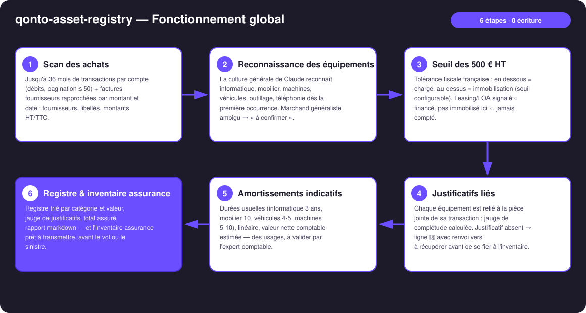
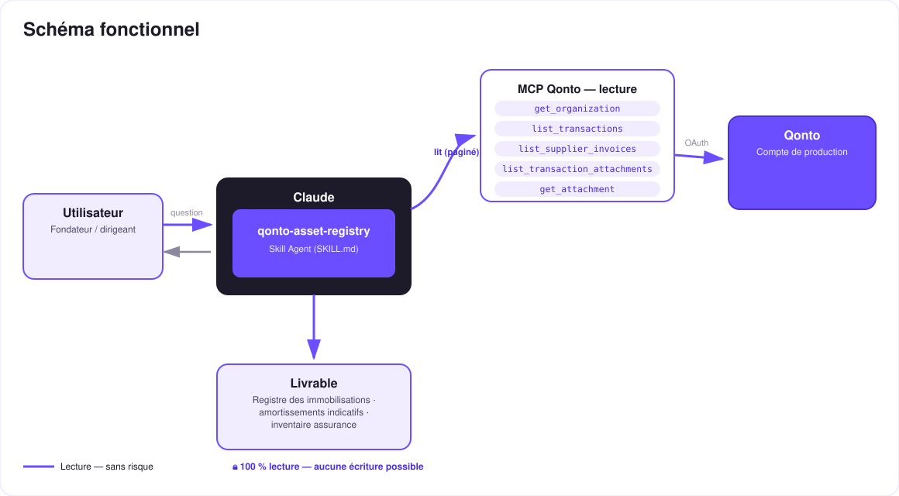

Ton compte sait ce que tu possèdes — le registre du matériel que personne ne tient.
Personne ne tient le registre des immobilisations. Et le jour du vol ou du sinistre, l'assureur demande l'inventaire avec les valeurs d'achat et les justificatifs — que personne n'a. Pourtant, le compte Qonto sait déjà tout ce que l'entreprise possède. Le skill le lit :
24-36 mois d'achats réels (transactions + factures fournisseurs) : informatique, mobilier, machines, véhicules, outillage, téléphonie — reconnus dès la première occurrence.
Tolérance fiscale française : en dessous = charge, au-dessus = immobilisation (configurable). Leasing signalé « financé », jamais compté.
Date, fournisseur, description, HT/TTC, justificatif lié, statut — avec jauge de complétude des justificatifs.
Amortissements indicatifs (linéaire, VNC estimée — à valider par l'expert-comptable) et inventaire assurance prêt à transmettre.
| Prérequis | Détail | Obligatoire |
|---|---|---|
| Compte Qonto production | Le skill s'adapte à toute organisation — get_organization d'abord, zéro donnée en dur | ✅ |
| Pays | Mécanique universelle. Seuil 500 € HT + durées d'amortissement = pratique française ; autres pays Qonto (DE, ES, IT…) → registre et inventaire sans suggestion fiscale | ℹ️ détecté |
| MCP Qonto connecté | Connecteur officiel (claude.ai / Claude Desktop), login OAuth | ✅ |
| Historique 24-36 mois | En dessous : registre partiel, période couverte annoncée | ⭕ |
| Justificatifs joints | Plus il y en a, plus l'inventaire est solide ; les manquants sont listés 📎 (renvoi qonto-receipt-hunter) | ⭕ |

list_supplier_invoices), rapprochées par montant et date, portent la description propre et le montant HTqonto-receipt-hunter proposé pour les récupéreremitted_at (règlement décalé de 1-2 jours) · TVA non renseignée → HT estimé et annoncé comme tel · pagination ≤ 50 partout
100 % lecture — la garantie la plus forte : aucun outil d'écriture n'est appelé, jamais. Aucune catégorie modifiée, aucun document envoyé, aucune demande créée. Le registre s'écrit tout seul ; ton comptable garde le stylo — le seuil des 500 € et les durées d'amortissement sont des usages indicatifs, pas des écritures comptables.
| Catégorie | Durée usuelle | Exemples |
|---|---|---|
| Informatique | 3 ans | Ordinateurs, écrans, serveurs, imprimantes |
| Téléphonie | 3 ans | Smartphones, standard, casques pro |
| Outillage | 5 ans | Outillage d'atelier, électroportatif |
| Machines | 5-10 ans | Machines de production, gros équipement |
| Véhicules | 4-5 ans | Voitures, utilitaires, deux-roues |
| Mobilier | 10 ans | Bureaux, sièges, rayonnages |
| Statut | Signification |
|---|---|
| ✅ Immobilisation | Équipement ≥ seuil (500 € HT par défaut), inscrit au registre et amorti |
| 💰 Charge | Sous le seuil : passé en charge, listé pour mémoire |
| ❓ À confirmer | Marchand généraliste, nature indéterminable — l'utilisateur tranche |
| 🔁 Financé | Leasing/LOA détecté : signalé, jamais compté dans le total |
| 📎 Manquant | Pas de justificatif lié — renvoi vers qonto-receipt-hunter |
Les cessions et mises au rebut sont déclarées par l'utilisateur, jamais supposées.
| Sortie | Format | Quand |
|---|---|---|
| Réponse dans la conversation | Tableaux markdown : registre trié par catégorie/valeur, amortissements, résumé (N actifs · valeur totale · jauge justificatifs) | Toujours — c'est la base |
| Dashboard / export | Fichier/artifact HTML autoportant charte Qonto : registre par catégorie, jauge de complétude, total assuré, frise d'amortissement | Si l'hôte affiche les fichiers ; repli automatique sur les tableaux |
| Inventaire assurance | Tableau prêt à transmettre : description, date d'achat, valeur, justificatif | À la demande — idéalement avant le sinistre |
La démo ≤ 3 min jointe à la PR suit le storyboard : le problème (l'inventaire que l'assureur exige et que personne n'a) → le scan → le registre avec justificatifs liés → le moment « tout était déjà là » → dashboard et inventaire assurance. Tournée en live sur un compte de production réel. Le script détaillé de tournage est conservé en interne (hors dépôt).
| Idée | Effort | Note |
|---|---|---|
| Modules pays (seuils et durées DE · ES · IT · AT · NL · BE · PT) | Moyen | La mécanique est déjà universelle ; il ne manque que les pratiques locales |
| Détection des cessions par crédit entrant (revente) | Moyen | Toujours proposée à confirmation, jamais supposée |
| Rapprochement avec un inventaire physique (photos, étiquettes) | Moyen | L'inventaire assurance devient opposable |
| Alerte de fin d'amortissement (renouvellement à budgéter) | Faible | Réutilise les dates de fin déjà calculées |
| Export CSV pour le cabinet | Faible | En complément de qonto-accountant-handoff |